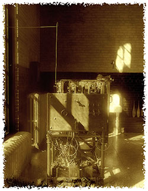
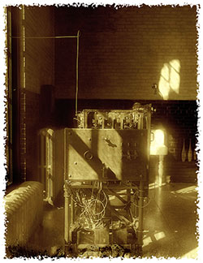

Cuiteur est une application de microblogage qui permet à ses utilisateurs de produire des messages courts (des blablas),
qui sont accessibles à une liste de contacts personnels (des abonnés).
Vous choisissez les membres dont vous souhaitez recevoir les messages
et à l'inverse d'autres utilisateurs s'inscriront à vos mises à jour et les recevront en temps réel.
Cuiteur dispose d'une importante communauté virtuelle qui permet de se créer facilement un réseau en ligne.
En bref, Cuiteur permet à n'importe qui de dire n'importe quoi à n'importe qui d'autre.
Que peut-on faire avec Cuiteur ?
Cuiteur vous permet de publier des blablas (messages courts limités à 200 caractères), qui seront lus par les personnes qui vous suivent (vos abonnés).
Cuiteur vous permet de vous abonner à d'autres utilisateurs pour lire les blablas qu'ils publient. Vous disposez d'un moteur de recherche pour trouver et sélectionner les personnes qui vous intéressent.
Cuiteur vous permet de répondre personnellement à un blabla et également de recuiter un blabla : un message de vos abonnements est retransmis à vos abonnés.
Les blablas peuvent être marqués avec des "tags". Ce sont des mots dans les messages qui permettent de faire des recherches sur un sujet précis et de définir les tendances des discussions à un moment donné.
Cuiteur, respect et protection de votre vie privée
Informations personnelles
Les informations personnelles recueillies par Cuiteur et susceptibles d'être mises à disposition du réseau concernent votre nom, votre date de naissance, votre site web personnel et une mini-biographie que vous pouvez renseigner si vous le désirez.
Données personnelles
Cuiteur n'utilise pas les informations fournies par ses utilisateurs pour introduire des publicités adaptées à leur profil. Cuiteur ne vend pas ces informations à des entreprises privées ou publiques, ou à des organismes gouvernementaux.
Tout le monde peut lire vos blablas
Vos blablas sont publics et peuvent être consultés par n'importe quel autre utilisateur. L'abonnement et le désabonnement d'une personne à une autre sont libres et ne donnent lieu à aucune validation d'un côté ou d'un autre.
Toutes les publications faites sur Cuiteur sont de la responsabilité de la personne qui en est l'auteur. Avant toute publication de textes ou de liens, il vous appartient en tant qu'auteur de vous assurer que ceux-ci n'enfreignent pas les lois de votre pays de résidence.
Les moyens techniques de Cuiteur
Cuiteur dispose de moyens techniques exceptionnels qui permettent les temps de réponse les plus rapides du Web. Nos Data Center sont situés sur 4 continents et peuvent prendre en compte des millions de connexions simultanées. Tous les développements d'applications sont donc conçus pour être tolérants aux pannes.
Pour stocker les données et répondre aux requêtes, Cuiteur a choisi des très gros serveurs. Les bases de données ont été spécialement étudiées et structurées pour offrir les meilleures performances, quelles que soient les conditions d'utilisation et de trafic.


 Data Center Etats-Unis
Data Center Asie
Data Center Etats-Unis
Data Center Asie
 Data Center Europe
Data Center Europe
 Serveur de mail
Serveur de mail
 Requête multicritères
Requête multicritères
 Tri de données
Tri de données